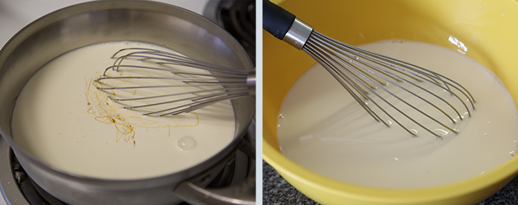
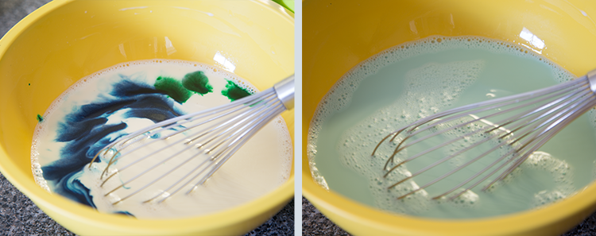
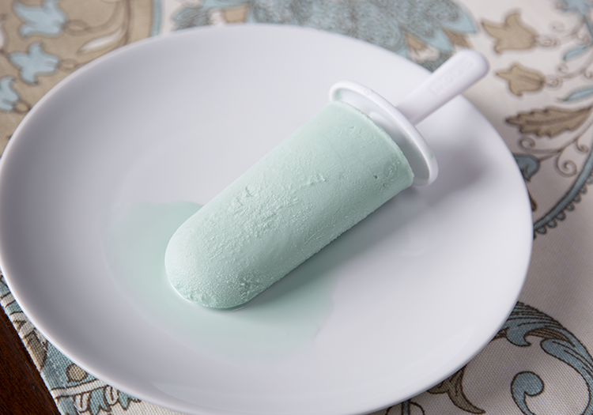

Sea Salt Popsicles
Kingdom Hearts

Ingredients
- 2 cups heavy cream
- 1 cup milk
- 1/2 cup honey
- 1 tsp vanilla extract
- sea salt
- 13 drops blue food colouring
- 3 drops green food colouring
Instructions
Required Equipment: Saucepan, popsicle mold, whisk.
- In a saucepan, over medium-high heat, combine the heavy cream, milk and honey.

- Once combined remove the saucepan from the heat and add the vanilla extract.
- Pour the mixture in a bowl and slowly add the sea salt. Taste until you are happy with the level of saltiness. It is easy to overdo it so be careful. Finally, add the food colouring.

- Place in the refrigerator and allow it to chill for 2 hours.
- After it has cooled, place the cream mixture in the molds and allow to chill in the freezer overnight. Enjoy!

Source-pixelatedprovisions.com
Home